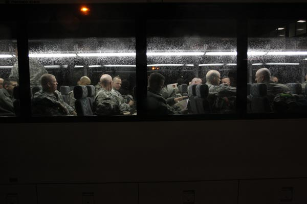

The final 150 soldiers from III Corps Command Group return from Iraq arrive in Fort Hood on February 9, 2011. The Center of Excellence brain research program offered a rare opportunity to study the same soldiers before and after their deployments to Iraq and Afghanistan. KELLY WEST / AMERICAN-STATESMAN